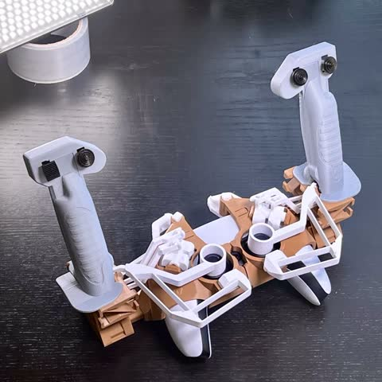
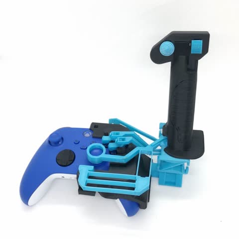
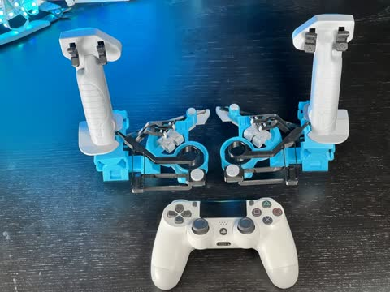
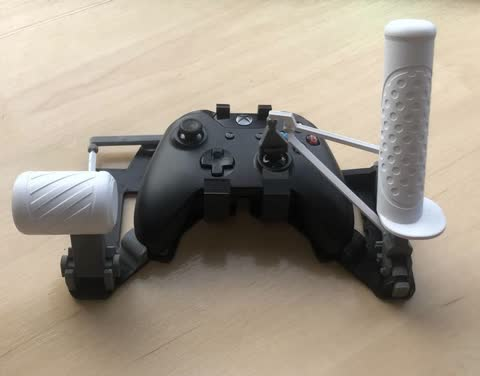
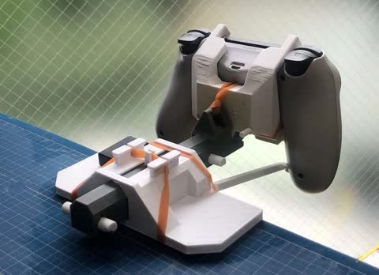
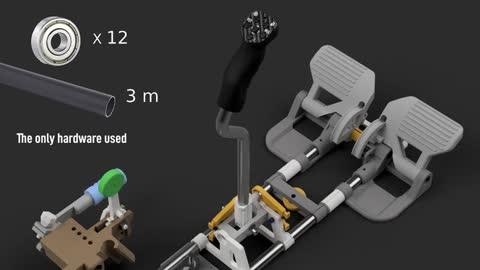
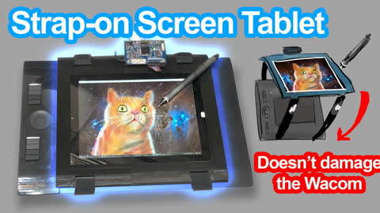
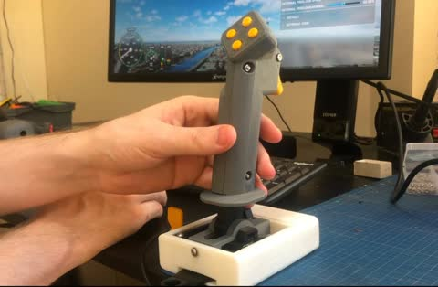

 |
PS5 Flexure JoystickA fully 3D-printed flexure attachment snaps onto a PS5 DualSense and turns its thumbsticks, buttons, and triggers into a pair of flight controls without modifying the controller. |
 |
Xbox Flexure JoystickThis snap-on Xbox One and Series S/X flight stick uses printed flexures and linkages to operate the controller's right thumbstick, face buttons, and triggers without extra hardware. |
 |
PS4 Flexure JoystickA pair of support-free flexure joysticks clips onto a PS4 DualShock and mechanically connects the larger sticks, buttons, and triggers to the controller's original inputs. |
 |
Original Snap-on Xbox JoystickThe original snap-on Xbox HOTAS uses printed ball-and-socket linkages to turn a standard gamepad into a joystick-and-throttle setup with no screws or electronics. |
 |
PS4 YokeThis 3D-printed yoke uses ball-and-socket links to translate push-pull and turning motions into the PS4 DualShock controller's two thumbsticks. |
 |
PVC Pipe Glider JoystickA 3D-printable glider cockpit built around 18 mm PVC pipe combines a long control stick, rudder pedals, trim and airbrake controls with digital magnetoresistive sensing. |
 |
WacomOLEDWacomOLED straps an iPad 3 LCD and 3D-printed frame onto a Wacom Intuos 4, turning the screenless tablet into a pen display without permanently modifying it. |
 |
Hall Effect JoystickA standalone 3D-printed USB flight stick uses Hall effect sensors for contactless pitch and roll sensing and an Arduino Pro Micro for game-controller input. |
H-pattern ShifterAn eight-speed 3D-printed H-pattern shifter uses cam mechanisms, microswitches, and an Arduino Pro Micro to provide USB controls for racing simulators. |